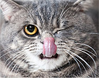

Useful To Know

Cats rub up against your leg to make you smell like a cat. The more you smell like them the more they like being around you.
Also, they are letting other cats know that you are their own special friend. They are depositing their scent, or marking their territory, on you. A cat will rub its head or the side of its chin against you, the furniture, or any object. Cats have glands on their forehead, mouth and chin that produce pheromones and they transfer these onto objects. 
Having a dog around can lead to lower levels of stress for both adults and kids. They’ve been found to decrease the risk of asthma in children and have been linked to lower blood pressure.
And researchers have also shown that dog owners are more active than those who don’t own dogs, packing in more steps per day on their walks or just regular playtime. Last month, a study showed that older dog owners take 2,760 more steps per day on average compared to non-owners, which amounted to an additional 23 daily minutes of moderate exercise. 
Rabbits make great pets. In general rabbits require appropriate housing, exercise, socialisation and diet for good welfare.
Some breeds of rabbits, particularly the longer haired rabbits, may require daily grooming.Rabbits are herbivores and only eat plant material. Their natural diet consists generally of young leaves from plants/bushes, grasses, weeds, plant bulbs and sometimes the bark from bushes and trees.Rabbits need to eat small amounts frequently. Approximately 30 feeds, of 2-8g of food, each day is normal.
Enjoying popularity around the world, budgies (also known as parakeets) are some of the best pet birds for good reason.
The captivating cockatiel is another great choice for anyone who wants a friendly and affectionate pet bird. Hailing from Australia, these birds make excellent pets when hand-fed as babies and raised in positive environments. While they don't normally learn to talk, cockatiels are exceptionally intelligent. Many learn to whistle quite well and mimic common household noises, such as doorbells, telephones, and microwaves. 
Fish are known to have a tranquil, calming effect on anyone who watches them glide serenely through the water.
What do you know about the fish you're interested in? For example: How big will it get? If it's a large fish, will it see smaller fish in the tank as prey? If it's a small fish, will it become prey for larger fish? Will it eat live plants in your aquarium? What kind of water best suits it (temperature, hardness, pH, etc.)? Does it need to live with other fish or alone? What does it cost? 
Tortoises are long-lived, hearty, and reasonably easy to care for. They are not an ideal pet to keep indoors, and not a pet that is played with, cuddled, or handled very often.
Tortoises thrive best where they get sunshine and fresh air. Some tortoises are shy and reclusive, while others are charismatic, inquisitive, and have personality. All tortoises are quiet, attractive and exhibit interesting behavior. The key to keeping your tortoise healthy is to follow these simple rules.